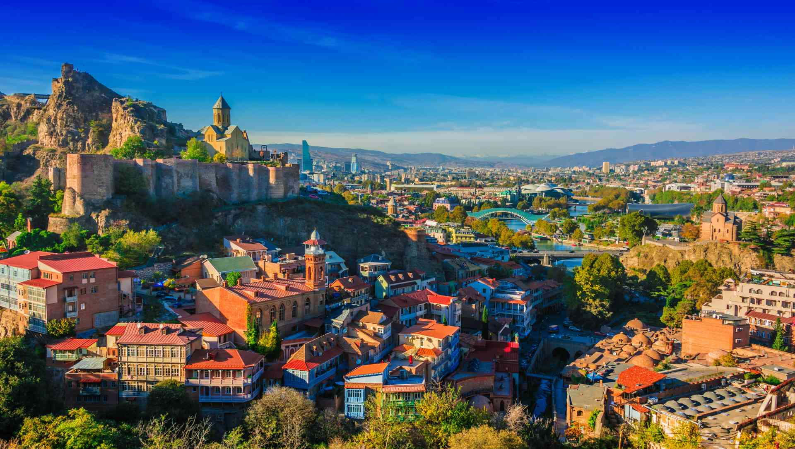
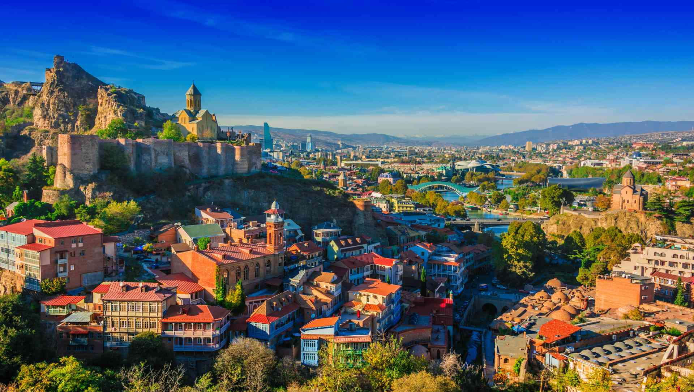

Georgia is a transcontinental country in Eastern Europe[10][11][12] and West Asia. It is part of the Caucasus region, bounded by the Black Sea to the west, Russia to the north and northeast, Turkey to the southwest, Armenia to the south, and Azerbaijan to the southeast. Georgia covers an area of 69,700 square kilometres (26,900 sq mi).[13] It has a population of 3.7 million,[b][14] of which over a third live in the capital and largest city, Tbilisi. Georgians, who are indigenous to the region, constitute a majority. Georgia has been inhabited since prehistoric times, hosting the world's earliest known sites of winemaking, gold mining, and textiles.[15][16] The classical era saw the emergence of several kingdoms, such as Colchis and Iberia, that formed the nucleus of the modern Georgian state. In the early fourth century, Georgians officially adopted Christianity, which contributed to their gradual unification and ethnogenesis.
Ancient Greeks (Strabo, Herodotus, Plutarch, Homer, etc.) and Romans (Titus Livius, Tacitus, etc.) referred to early western Georgians as Colchians and eastern Georgians as Iberians (Iberoi, Ἰβηροι in some Greek sources).[21] The first mention of the name Georgia is in Italian on the mappa mundi of Pietro Vesconte dated 1320.[22] At the early stage of its appearance in the Latin world, the name was often spelled Jorgia.[23] Lore-based theories were given by traveler Jacques de Vitry, who explained the name's origin by the popularity of St. George among Georgians,[24] while Jean Chardin thought that Georgia came from the Greek γεωργός ('tiller of the land'). These centuries-old explanations for the word Georgia/Georgians are now mostly rejected by the scholarly community, who point to the Persian word gurğ/gurğān (گرگ, 'wolf'[25]) as the likely root of the word.[26] Under this hypothesis, the same Persian root was later adopted in numerous other languages, including Slavic and West European languages.
The oldest traces of archaic humans in what is now Georgia date from approximately 1.8 million years ago in the form of the Dmanisi hominins, a subspecies of Homo erectus representing the oldest-known fossils of hominins in Eurasia.[37] Buffered by the Caucasus and benefiting from the Black Sea ecosystem, the region seems to have served as a refugium throughout the Pleistocene,[38] while the first continuous primitive settlements date back to the Middle Paleolithic, close to 200,000 years ago.[39] During the Upper Paleolithic, settlements developed mostly in Western Georgia, in the valleys of the Rioni and Qvirila rivers.
 
